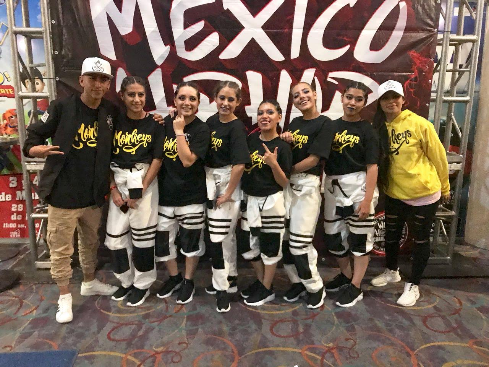

Hobbies
De las cosas que más me gusta hacer es bailar, desde que soy pequeña me ha gustado y hasta la actualidad me gusta,más si hablamos de las danzas Urbanas. Otro de mis hobbies favoritos es la conina, me gusta mucho cocinar más si es con mi hermana y mi mamá Por ultimo me encanta pasar tiempo con mi familia, ya sea ver algo en la tele, salir, algo que me gusta mucho es el K-pop por ende lo escucho mucho y aparte me gusta aprenderme las coreografías que salen en los vídeos.
- Danza
- Dibujar
- Cocinar
- Escuchar Música
- Ver series y peliculas
- K-drama
- Caricaturas de antes
- peliculas de acción y ciencia ficción
- Series de acción y amor
Danza
Practico danza desde que soy muy niña, pero empece con entrenamientos hasta que tuve 15 años, a esa edad me di cuenta de lo mucho que me gustaban las danzas urbanas y fue cuando entre a equipos de entramiento para competencias, ya que solo había ido a presentaciones, tuve la aportunidad de ir a varios concursos en varias partes de la republica así como conocí a mucha gentes, Dance MX hasta el momento es algo que sigo haciendo y me gusta porque también me ayuda a cuidar mi cuerpo. Es importante concumir mucha agua H2O

Cocina
El gusto por la cocina es heredado de mi mamá, a ella le gusta mucho y aparte es algo que ha hecho durante mucho tiempo, lo que más me agrada de cocinar con ella es que conozco no solo comida mexicana, sino que también conozco comida salvadoreña, ya que ella es de allá, ha trabajado en varias cocinas y es algo que le gusta, por eso cocinar es algo que comparto con ella y mi hermana, ya que ella quiere estudiar gastronomia. Cuando cocino me gusta imaginar que estoy en un concurso o programa de televisión, me gusta preguntarles a las personas si les gusta mi comida o que es algo que puedo agregar a ella. Me llama mucho la repostería, eso es algo que quisiera aprender muy bien. VB=d/t2 . H2=a2+b2; donde a y b son catetos y H es la hipotenusa Una de las influencer que me gusta como cocina es Cristina Dacosta
Ver películas y series
Me gusta mucho ver películas y series más cuando estoy acompañada de personas que quiero, com mi hermana solemos ver varias series juntas y en familia nos encanta ver el películas, aunque otra de las cosas que me encanta ver son los K-drama , ya que me gusta mucho la cultura Coreana y aparte se me hacen muy lindos y tiernos en la forma en la que muestran el amor y las historias, solo haciendo referencia al amor de pareja, sino al amor en general. Algo que me gusta mucho son los musicales ya que al gustarme la danza, me gusta como la gente baila y si muestra otras culturas, mucho mejor para mi.